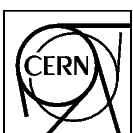

Compilation and Interpretation System
Reference Manual
Version 2.
Application Software and Databases
Computing and Networks Division
 CERN Program Library Long Writeups L210
Compilation and Interpretation System
Reference Manual
Version 2.
Application Software and Databases
Computing and Networks Division
Copyright Notice COMIS – Compilation and Interpretation System
CERN Program Library entry L210
© Copyright CERN, Geneva 1994–1998
Copyright and any other appropriate legal protection of these computer programs and associated
documentation reserved in all countries of the world.
These programs or documentation may not be reproduced by any method without prior written consent of
the Director-General of CERN or his delegate.
Permission for the usage of any programs described herein is granted apriori to those scientific institutes
associated with the CERN experimental program or with whom CERN has concluded a scientific
collaboration agreement.
Requests for information should be addressed to:
CERN Program Library Office
CERN-IT Division CH-1211 Geneva 23
Switzerland
Tel. +41 22 767 4951
Fax. +41 22 767 8630
Internet: cernlib@cern.ch
Trademark notice: All trademarks appearing in this guide are acknowledged as such.
| Contact Person: | Vladimir Berezhnoi /EP | Vladimir.Berejnoi@cern.ch |
| Cocumentation consultant: | Michel Goossens /CN | (goossens@cern.ch) |
| Edition – August 1998 |
This manual serves at the same time as a Reference manual and as a User Guide for the comis system. Historically the following IHEP (Institute for High Energy Physics, Moscow Region, Russia) people have worked on the comis system: V. Bereshnoi, S. Nikitin, Y. Petrovych and V. Sikolenko. At CERN René Brun has contributed to the development of the system.
In this manual examples are in monotype face and strings to be input by the user are underlined. In the index the page where a routine is defined is in bold, page numbers where a routine is referenced are in normal type.
In the description of the routines a * following the name of a parameter indicates that this is an output parameter. If another * precedes a parameter in the calling sequence, the parameter in question is both an input and output parameter.
This document has been produced using LATEX1 with the cernman style option, developed at CERN. A compressed PostScript file comis.ps.Z, containing a complete printable version of this manual, can be obtained from any CERN machine by anonymous ftp as follows (commands to be typed by the user are underlined):
comis (a COMpilation and Interpretation System) is a Fortran interpreter. With comis you can interactively define, edit and execute any Fortran-like routines (e.g., consisting of one simple output statement), without recompiling and relinking. A small user interface system is part of comis, and an interface with the local editor is also provided.
comis is one of the key components of the paw system and is currently implemented on IBM VM/CMS, VAX/VMS, Apollo (Aegis and Unix), IBM RS/6000, DEC Station 3100, Silicon Graphics, Sun, HP/UX and MSDOS. It can also be used as an interactive compiler and interpreter from inside a Fortran 77 program. If the source of your program to be compiled is in a file IFORT.FOR then you should use the following code:
You can run the simple example below by typing the lines below in response to the comis prompt “CS>”: